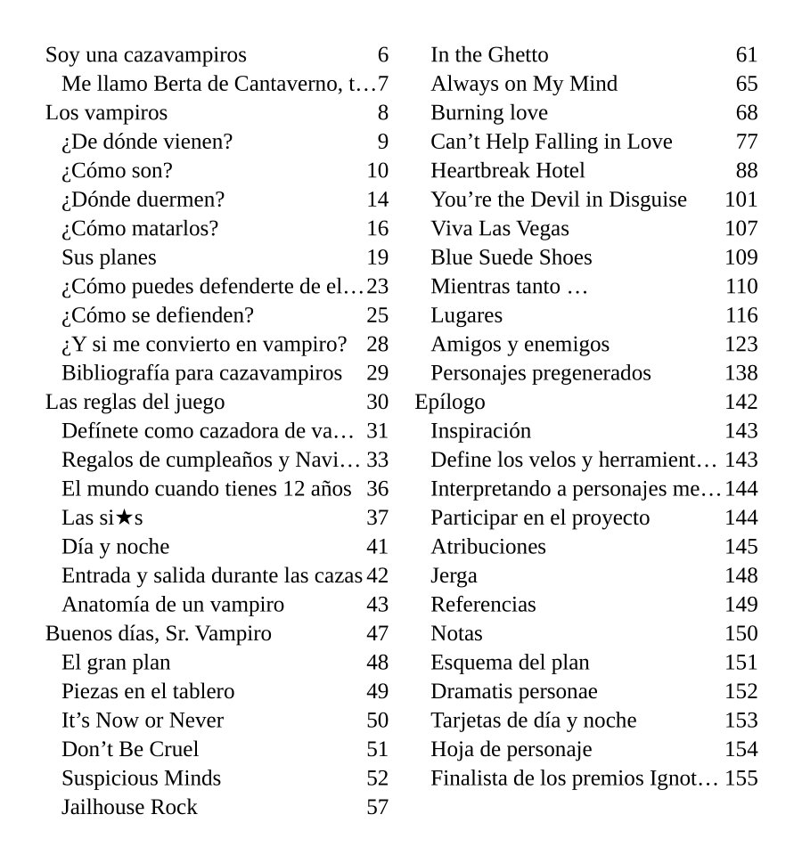
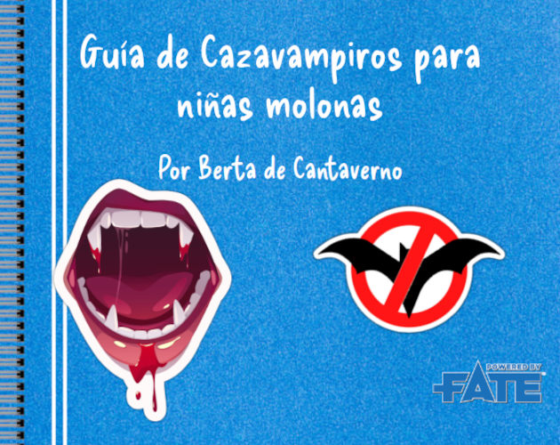
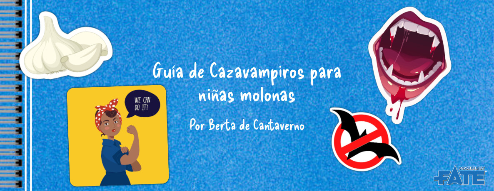
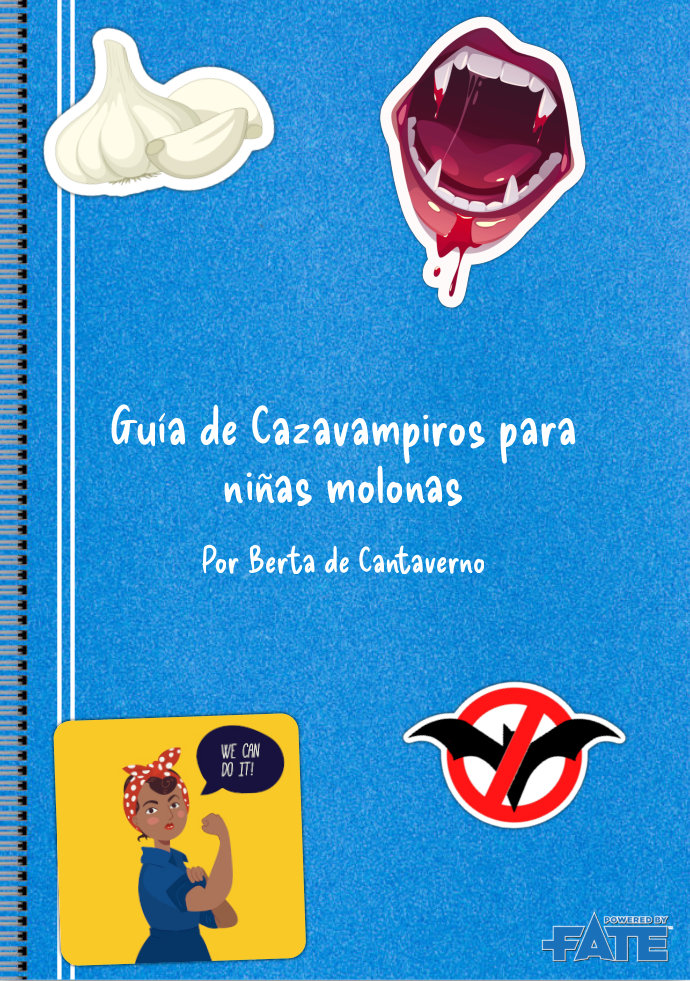
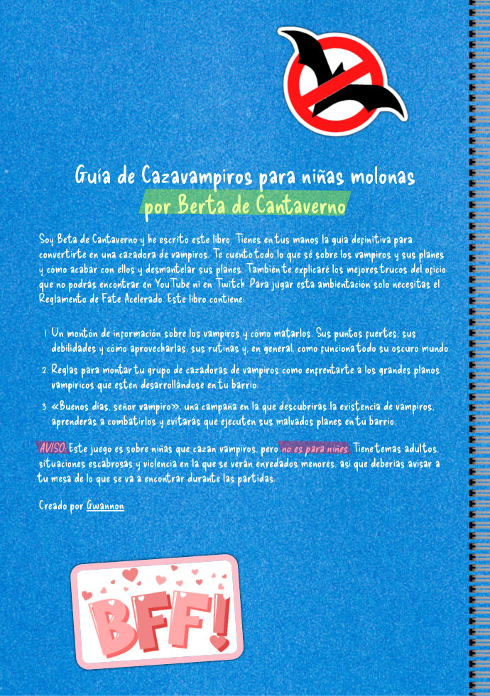
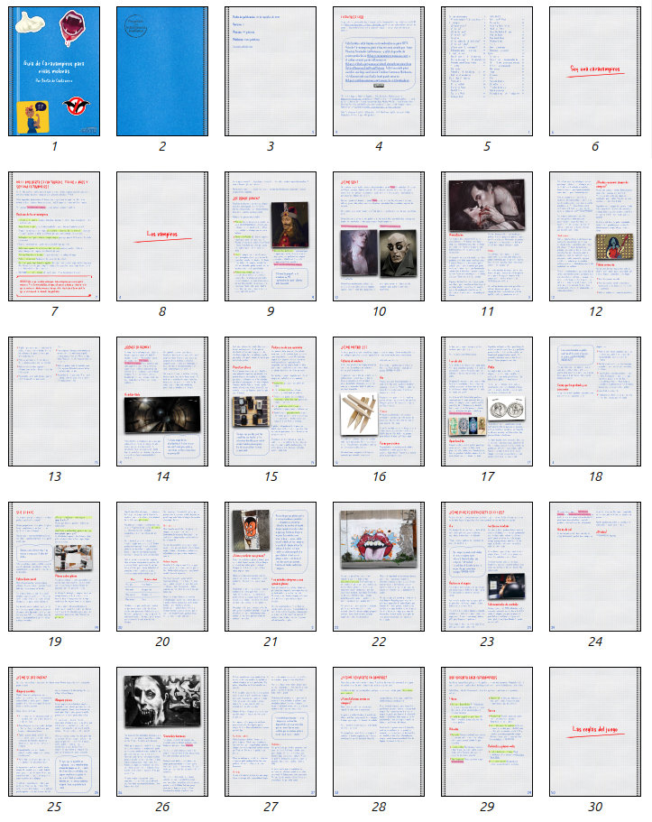
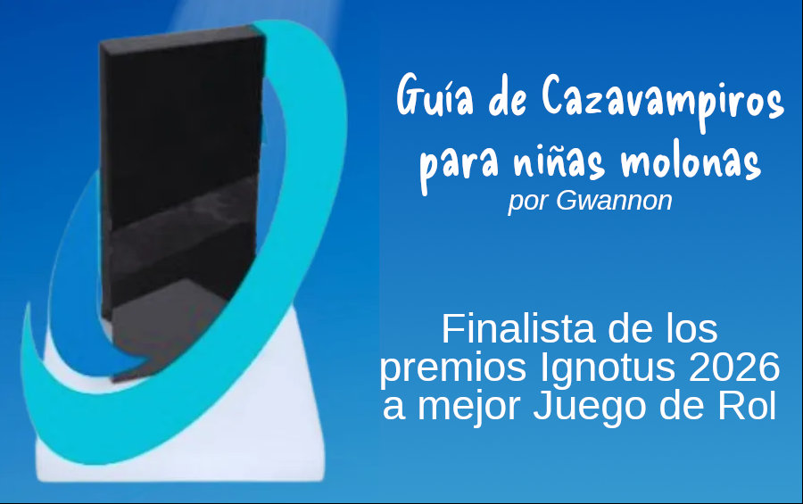

Este dossier de prensa recoge toda la información que puede necesitar para tu reseña del finalista a mejor juego de rol en los Ignotus 2026, Guia de Cazavampiros para niñas molonas (a partir de ahora GCNM).
Descripción
GCNM es una ambientación para FATE Acelerado publicada el 24 de agosto de 2025. 3 conceptos clave definen eta ambientación
- interpretar niñas
- cazar vampiros
- proteger el barrio
En esta ambientación los vampiros son los culpables de todos los problemas del barrio. Los gentrifican, expulsan a sus vecinos, deterioran sus servicios, hacen que la gente se odie entre ellos en vez de ayudarse, etc. degradándolos hasta que pueden moverse sin problemas haciendo u fechorías.
Por cierto, si cambias vampiro por facha, la ambientación no cambia ni ápice, pero poner vampiros era más guay.
El libro tiene dos partes. La primera parte contiene las reglas específicas de la ambientación, donde se explican cómo son los vampiros y sus planes, cómo afectan al barrio y sobre todo como ser una cazavampiros infantil y combatir a los chupasangres.
También contiene reglas para la creación de las cazadoras, sus grupos de cazadoras, sus refugios y sus mascotas. Trae ejemplos de tácticas y armas eficaces contra vampiros como las pistolas de agua cargadas de té de ajo.
Esta primera parte imita al manual casero de combate y supervivencia que escribe una niña llama Berta de Cantaverno (un juego de palabras con Otto Van Helsing) y que es una curtida cazavampiros infantil.
La segunda parte incluye una campaña corta que te permite saborear toda la ambientación en su totalidad. Tus cazadoras empezarán investigando la muerte de una de sus profesoras y terminarán salvando a su barrio y derrotando al poderoso Lord Ceballos, sus siervos vampíricos y humanos y la gran megacorporación que controla, la Corporación Ceballos.
Índice

Características
- Formato: A4 a color
- Páginas: 158 páginas
- Palabras: 51.208 palabras
- Fichero: PDF (14,5 Mb) con índice.
Está maquetado como un cuaderno de anillas escrito a mano con bolígrafo azul y rojo, fluorescente verde y amarillo, fotos grapadas y pegatinas.
Puntos fuertes y débiles
Puntos fuertes
- Aunque te enfrentes a vampiros, es una ambientación muy mundana con problemas muy de calle. Los vampiros pueden dar miedo, pero más miedo da que te echen de tu casa para poner un piso turístico, que tus hijes acaben enganchades a las apuestas o que tiren alguna joya de la arquitectura para que monten un centro comercial.
- Es gratis, con lo que la relación calidad/precio es inmejorable.
- Tiene una licencia que te permite hacer con ello lo que quieras. Bueno las imágenes no son mías, pero muchas de ellas son libres o medio libres.
- Tienes varias versiones y formatos para mayor accesibilidad. Y si crees que nos falta alguna, pues estamos encantados de escucharte.
Puntos débiles
- Seamos sinceros, esto no ha sido testado de ninguna manera. No me gusta testar, si hay problemas de diseño, te los comes con patatas. Pero míralo de esta manera (Modo Coach rolero ON), esto te hará mejor directore/jugadore de rol.
- Tampoco ha pasado por un proceso de corrección, pero piénsalo así, puedes convertirte en corrector de juegos de rol (y ponerlo en tu CV) si me envías alguna errata o algún fallo de expresión.
- Es un producto totalmente amateur, eso supone que como mínimo tiene más calidad que cualquier cosa escrita por un YouTuber.
Conclusiones/críticas que puedes usar en tu reseña.
- Pero esto es Drácula Dossier con niñas. Efectivamente es una copia mala y chusca de Drácula Dossier con niñas de barrio, pero es gratis y he tenido la decencia de escribir una campaña para ellos en vez de poner montones de semillas de aventuras y unas reglas para hilarlas.
- Pero esto es los Goonies contra Drácula. Pudiera ser, pero he tratado de ser menos racista y gordofobo y no fomentar el bullying. En lo que si se parecen es que ninguna de las dos obras aparecen pulpos gigantes.
- Pero si ya nadie juega a FATE y mucho menos a FATE Acelerado. La idea es que como nadie va a jugar a GCNM podré echarle la culpa al sistema y no a qué es un mojón escrito sin talento por tío que se cree autor de rol.
- Pero si solo puedes jugar con niñas y los niños cazavampiros ¿qué? Si eso te molesta espera, espera a que leas el primer niñes o el Liege Vampire. Cierra al salir.
Enlaces
Licencia
GCNM se encuentra bajo la licencia Creative Commons Atribución 4.0 Internacional (CC BY 4.0) (https://creativecommons.org/licenses/by/4.0/deed.es). Puedes usar este contenido en cualquier forma que te permita la licencia incluso comercial, siempre que incluyas un texto atribuyéndome como autor.
Si no lo haces, es que eres el ser más rastrero del mundo, peor que Elon Musk. Por favor, que te lo estoy dando gratis y poner una referencia no cuesta nada. Si con ponerlo al final en letra tamaño superpequeña, cumples con la licencia.
Material gráfico
Logos
630x500

1186x460

Capturas de pantalla



Banner finalista Ignotus 2026 a mejor juego de rol

El autor, o sea, yo mismo
Me llamo Jorge Monclús y llevo desde 35 año jugando a rol regularmente y escribiendo mierdas roleras desde hace 5. Me encanta Savage Worlds y FATE y trato de alejarme de D&D todo lo que pueda, aunque con mi mesa habitual es complicado.
Estudie Publicidad y Relaciones Públicas, pero acabe como programador en una empresa de marketing online, así que la promoción de productos, en este caso GCMN, es bastante normal para mí.
Me gusta tocar las narices a las editoriales de rol, así que alguna ha sufrido algún hackeo mío (aunque luego le dije como corregirlos) y monte una web para sacar a la luz los retrasos de sus mecenazgos y preventas.
Puedes encontrar más de mis proyectos roleros en https://gwannon.com/ y en mis perfiles de itch.io y rpg-trader.com.
Mis redes y otros enlaces
Hilo de curiosidades
- Berta de Cantaverno es la cazadora que escribe a modo de manual la primera parte del juego. Me encantan los juegos de palabras en los nombres de PNJ. Así qué su nombre es un juego de palabras con «Van Hel Sing» que pasa a «de Canta Averno» y en vez de Otto me gusto Berta que quedaba muy germánico.
- Pensé escribirlo para #SavageWorlds, pero no me cuadraba el toque pulp que tiene y opte por FAE (FATE Acelerado). Los aspectos me daban más libertad para que hicieran lo que quisieran las cazadoras y se enfrentaran a los vampiros con recursos extraños y diferentes.
- Tiene 158 páginas, 51.195 palabras y 81 imágenes.
- Es el primer proyecto en el que meto personajes pregenerados. No es mi rollo, pero, más que para usarlos en la campaña, están metidos para dar una idea de cómo hacerte tus propias cazadoras. No les puse una foto para no meter fotos de menores, les metí un grafiti que representa bastante bien a la cazadora.
- Todo esto empezó tras ver los primeros capítulos de la serie «El Vecino». Va de un superhéroe de barrio que lucha contra los problemas propios del barrio, en vez de en grandes eventos cósmicos. Pero pasamos de los superhéroes y preferimos meter vampiros al más puro estilo «Jóvenes ocultos».
- El tema de las niñas cazavampiros me viene de dos comics que me encantan, «Soy una matagigantes» de Joe Kelly y Ken Niimura donde vemos a una niña luchando contra gigantes reales e imaginarios y «Leñadoras» de ND Stevenson donde un grupo de chicas exploradoras se enfrentan con mucho humor a todo tipo de eventos mágicos y de monstruos de todo tipo de mitologías.
- Cada capítulo de la campaña se titula como una canción de Elvis. No tratéis de buscarle un sentido (aunque alguno lo tenga), simplemente me hizo gracia y lo puse así como guiño a Lilo & Stitch.
- La idea es que la aventura transcurra entre invierno y primavera y, si algún día la continuo, la siguiente aventura transcurrirá en un campamento de verano/vacaciones con, seguramente, hombreslobos, druidas corruptos, paletos antropófagos, …
- El vampiro Alfonsé es el primer personaje principal abiertamente No-Binario que escribo.
- En todas las campañas que he escrito he metido una escena de Noche de Póquer (o similar) en la que deben pagar sus deudas de juego contando una historia humillante. Aquí lo convertí en una pijamada y además de la historia servía para darte un mote, si no lo tenías ya.
- Tú mote es uno de los aspectos que puedes usar en partida. No empiezas con él, tienen que ponértelo tus compañeras.
- La gran mayoría de imágenes usadas son fotos de graffitis, muchos de ellos representando vampiros. Cómo no, he metido el meme de «vanpiro esisten». Ilustran perfectamente el libro, quedan bien con la temática de barrio y la maquetación de fotos grapadas y no he tenido que usar genAI.
- Al hilo de lo anterior, el aviso de que no se ha usado IA en el proyecto con el texto «Pergeñado con Inteligencia Humana» es obra de Ángel G. Ropero
- El caso del vampiro de Glasgow también sirvió de inspiración.
- El juego está escrito en texto plano con un bloc de notas, usando marcación Markdown para titulares, negritas, … Un script desarrollado en PHP lo convierte en HTML y lo maqueta usando CSS y luego lo convierte en PDF usando un Chrome y su función de imprimir y para terminar mete un índice al PDF. Literalmente meto un párrafo nuevo y en segundos lo tengo maquetado y generado el PDF y con el índice actualizado. Lo cual es una gran ventaja.
- Una decisión de diseño interesante fue hacer que los vampiros flotarán despacio en vez de volar rápidamente. La razón, entre otras, es que si tus cazadoras tienen que fingir ser vampiras pueden fingir flotar con unas cuerdas y algún truco sencillo de efectos especiales. Volar sería más complicado.
- Otra decisión de diseño fueron los espejos. Los vampiros no se reflejan en los viejos espejos que tenían plata, en los modernos de aluminio sí. De esa forma tus cazadoras podían escapar a esa prueba de detección tan simple. Además, encontrar un buen espejo antiguo podía ser una aventura interesante.
- Los aspectos día, noche, anocheciendo y amaneciendo son tan importantes en una historia de vampiros que tienen sus propias fichas cuquis para ponerlas en la mesa y que quede claro cuál es el aspecto actual.
- Si jugará a esta ambientación me haría a Andrómeda, la amiga conspiranoica de Tilly en «Los Green en la Gran Ciudad».